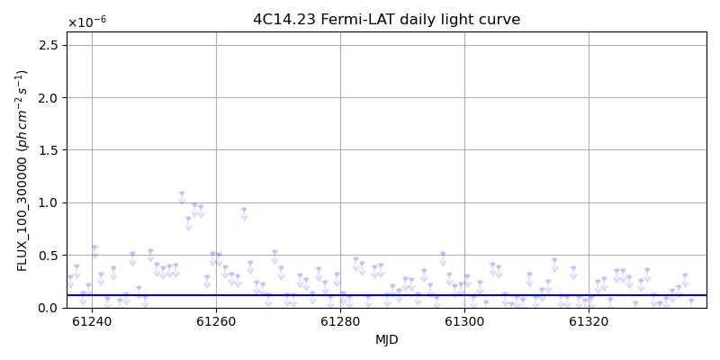
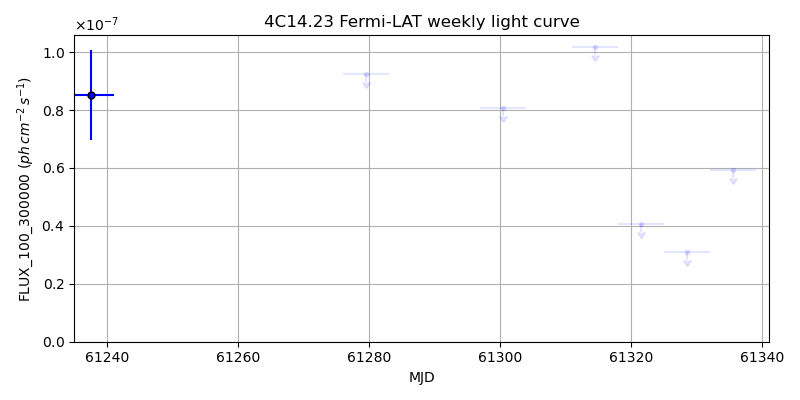
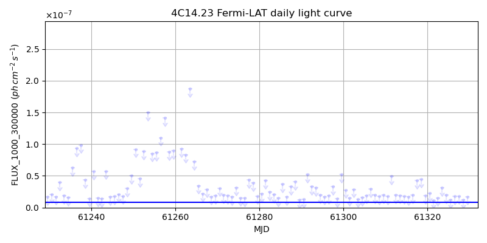
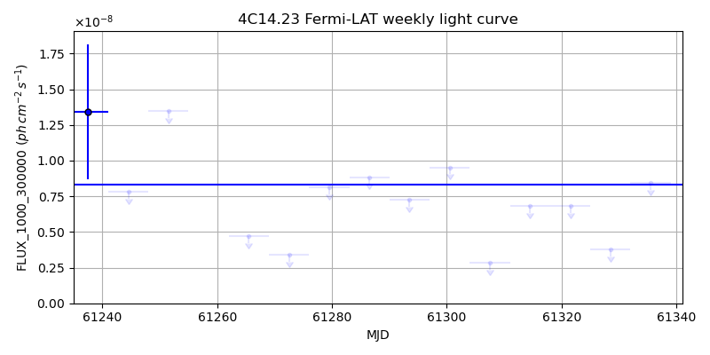

LAT Lightcurve site: https://fermi.gsfc.nasa.gov/ssc/data/access/lat/msl_lc/source/4C_14d23
NED: Query
Time of last update of this page: UT: 2026-10-24 15:18 (MJD: 61337.638)
| Property | Value |
|---|---|
| R.A. | 7:25:16.80 |
| Dec. | 14:25:12.0 |
| z | 1.039 |
| 3FGL SpectrumType | LogParabola |
| 3FGL PL Index | |
| 3FGL Flux_100_300000 | 1.14e-07 1 / (s cm2) |
| 3FGL Flux_1000_300000 | 8.34e-09 1 / (s cm2) |
| 3FGL Flux >200 GeV | 4.99e-12 1 / (s cm2) |
| 3FGL Extrap. Crab >200 GeV | 0.02 |
| 3FGL Flux After EBL Absorption >200GeV | 7.11e-14 1 / (s cm2) |
| 3FGL EBL Crab Fraction >200GeV | 0.00 |

| MJD | dMJD | Flux | dFlux | Frac3FGL | FracCrab>200GeV | EBLFracCrab>200GeV |
|---|---|---|---|---|---|---|
| 61332.50 | 0.50 | 9.55e-08 | 0.00e+00 | 0.00 | 0.00 | 0.00 |
| 61333.50 | 0.50 | 1.65e-07 | 0.00e+00 | 0.00 | 0.00 | 0.00 |
| 61334.50 | 0.50 | 2.06e-07 | 0.00e+00 | 0.00 | 0.00 | 0.00 |
| 61335.50 | 0.50 | 3.10e-07 | 0.00e+00 | 0.00 | 0.00 | 0.00 |
| 61336.50 | 0.50 | 7.32e-08 | 0.00e+00 | 0.00 | 0.00 | 0.00 |

| MJD | dMJD | Flux | dFlux | Frac3FGL | FracCrab>200GeV | EBLFracCrab>200GeV |
|---|---|---|---|---|---|---|
| 61300.50 | 3.50 | 8.06e-08 | 0.00e+00 | 0.00 | 0.00 | 0.00 |
| 61307.50 | 3.50 | 1.27e-07 | 0.00e+00 | 0.00 | 0.00 | 0.00 |
| 61314.50 | 3.50 | 1.02e-07 | 0.00e+00 | 0.00 | 0.00 | 0.00 |
| 61321.50 | 3.50 | 4.07e-08 | 0.00e+00 | 0.00 | 0.00 | 0.00 |
| 61328.50 | 3.50 | 3.09e-08 | 0.00e+00 | 0.00 | 0.00 | 0.00 |

| MJD | dMJD | Flux | dFlux | Frac3FGL | FracCrab>200GeV | EBLFracCrab>200GeV |
|---|---|---|---|---|---|---|
| 61332.50 | 0.50 | 1.11e-08 | 0.00e+00 | 0.00 | 0.00 | 0.00 |
| 61333.50 | 0.50 | 1.81e-08 | 0.00e+00 | 0.00 | 0.00 | 0.00 |
| 61334.50 | 0.50 | 3.94e-08 | 0.00e+00 | 0.00 | 0.00 | 0.00 |
| 61335.50 | 0.50 | 4.36e-08 | 0.00e+00 | 0.00 | 0.00 | 0.00 |
| 61336.50 | 0.50 | 1.97e-08 | 0.00e+00 | 0.00 | 0.00 | 0.00 |

| MJD | dMJD | Flux | dFlux | Frac3FGL | FracCrab>200GeV | EBLFracCrab>200GeV |
|---|---|---|---|---|---|---|
| 61300.50 | 3.50 | 9.52e-09 | 0.00e+00 | 0.00 | 0.00 | 0.00 |
| 61307.50 | 3.50 | 2.84e-09 | 0.00e+00 | 0.00 | 0.00 | 0.00 |
| 61314.50 | 3.50 | 6.82e-09 | 0.00e+00 | 0.00 | 0.00 | 0.00 |
| 61321.50 | 3.50 | 6.81e-09 | 0.00e+00 | 0.00 | 0.00 | 0.00 |
| 61328.50 | 3.50 | 3.75e-09 | 0.00e+00 | 0.00 | 0.00 | 0.00 |
--------------------------------------------------------- Using user-supplied coords: 7:25:16.80 14:25:12.0 2000 --------------------------------------------------------- FLWO UT night of: 2026-10-25 Local Sid. @ Midnight: 01:50 Sunset (-15.0) (local, UT): 18:49 01:49 Sunrise (-15.0) (local, UT): 05:27 12:27 Moonrise (local, UT): Moonset (local, UT): Moon phase: 0.99 --------------------------------------------------------- AzTime LSID UT Obj_el Obj_az Mn_el Mn_az Sep. --------------------------------------------------------- 18:49 20:39 01:49 -40.8 23.5 26.2 94.5 93.9 19:19 21:09 02:19 -37.8 32.0 32.4 98.6 93.6 19:49 21:39 02:49 -34.0 39.8 38.6 103.2 93.4 20:19 22:09 03:19 -29.7 46.6 44.7 108.4 93.2 20:49 22:39 03:49 -24.8 52.7 50.6 114.6 93.0 21:19 23:09 04:19 -19.5 58.1 56.2 122.3 92.8 21:49 23:39 04:49 -13.9 63.0 61.2 132.2 92.6 22:19 00:09 05:19 -8.1 67.5 65.5 145.3 92.4 22:49 00:39 05:49 -1.2 71.7 68.4 162.2 92.2 23:19 01:10 06:19 4.2 75.6 69.4 182.2 92.0 23:49 01:40 06:49 10.3 79.4 68.2 202.0 91.8 00:19 02:10 07:19 16.6 83.1 65.1 218.6 91.6 00:49 02:40 07:49 23.0 86.8 60.8 231.3 91.4 01:19 03:10 08:19 29.4 90.7 55.7 240.9 91.2 01:49 03:40 08:49 35.8 94.9 50.1 248.5 91.0 02:19 04:10 09:19 42.1 99.5 44.3 254.6 90.8 02:49 04:40 09:49 48.4 104.8 38.2 259.8 90.6 03:19 05:10 10:19 54.5 111.2 32.1 264.4 90.4 03:49 05:40 10:49 60.2 119.4 26.0 268.5 90.2 04:19 06:10 11:19 65.5 130.6 19.9 272.4 89.9 04:49 06:40 11:49 69.8 146.2 13.8 276.2 89.6 05:19 07:11 12:19 72.3 167.3 7.8 279.9 89.4 05:27 07:18 12:27 72.6 173.5 6.2 280.9 89.3 --------------------------------------------------------- Moon up all night, no dark time. Dark hours >55 deg.: 0.00